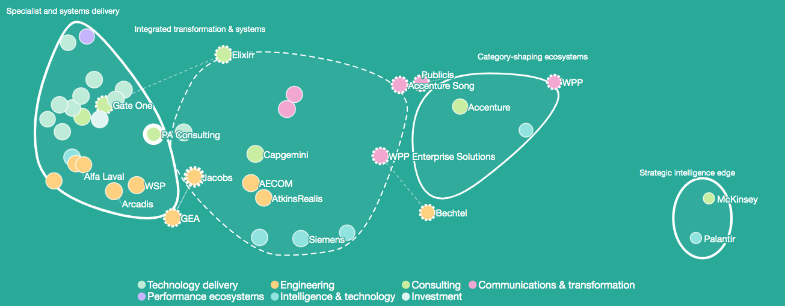
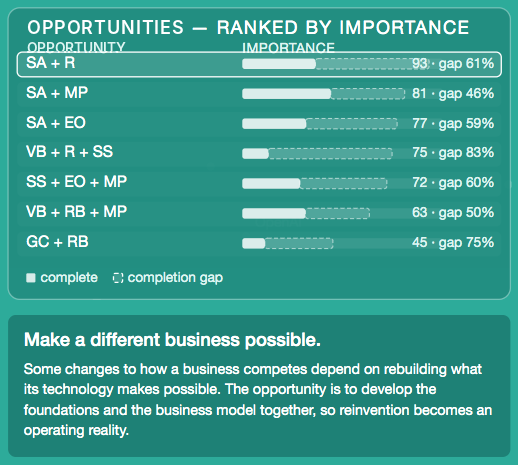
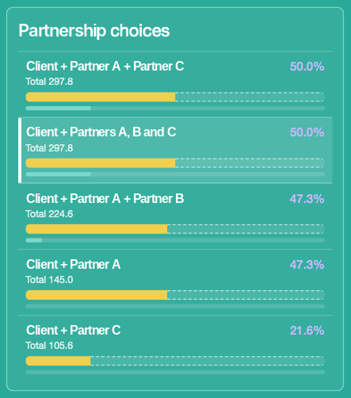

See what's possible next.
You're shaping where your business goes next. Depthless reveals opportunities beyond those already on the table: unmet demand, distinct competitive positions, and combinations of businesses and capabilities that create new value.
Use it alongside your strategy, data and experience to explore growth, acquisitions, partnerships and investment — with a connected understanding of the market that deepens as your business develops.
See your market from a different angle.
Depthless maps real organisations by their meaning, capabilities and strategic positions — revealing where they compete, where they differ and where influence over opportunity lies. Your business, a potential acquisition or a prospective partner can then be explored in the same connected market context.

Where is valuable demand still unmet?
We start with what customers and markets are trying to achieve, independently of any particular supplier. Then we examine what existing organisations actually provide. Even crowded markets leave important combinations of needs inadequately served — and those gaps reveal opportunity.
In one market we mapped, 20 suppliers touched the need to own business results after delivery. Only 3 were strongly placed to do it.

Where can your strengths take you?
Once an opportunity is established on its own terms, Depthless shows how your existing strengths relate to it, where you have an advantage and what additional capabilities change your position.
Intelligence that grows with the business. Demand, organisations, capabilities and opportunity formations sit within one connected model. New questions and new opportunities build on the knowledge already developed, rather than starting a separate analysis each time.
Which moves open the most value?
Explore acquisitions, partners, investments and new combinations of capabilities. See what each option contributes, what becomes possible together and which constraints still need to be addressed.

Turn discovery into strategic advantage.
In one engagement, Depthless identified a valuable opportunity for a mid-sized company competing alongside much larger firms. By exploring complementary partners, the analysis revealed a formation that moved the client's modelled opportunity access from 35th to 3rd. The result was a clearer view of the route, the contributions that matter and the choices for leadership.

Explore what comes next for your business.
Start with the strategic questions that matter to you. Depthless builds an initial picture from available market knowledge and brings your own information into the analysis where it adds value.
depthless adj.
complete absence of depth: instantly accessible
infinite depth: infinite possibility